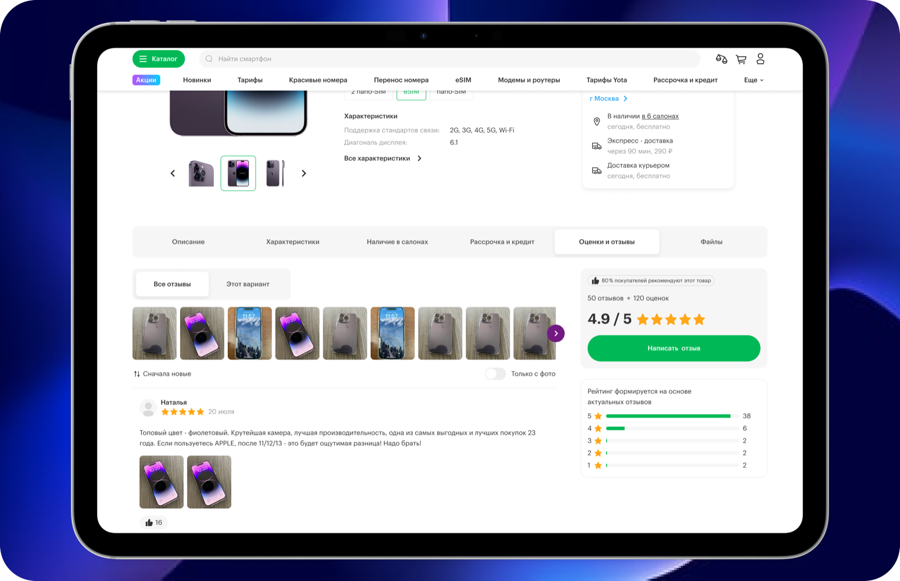
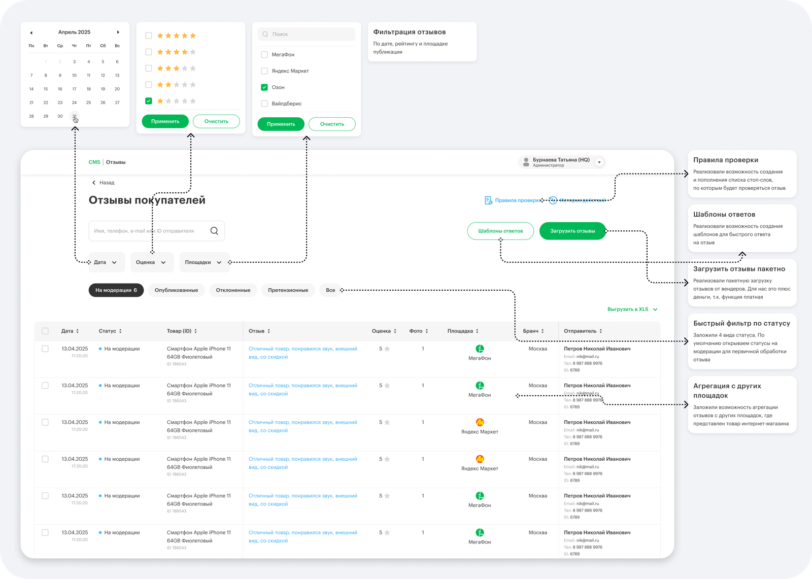
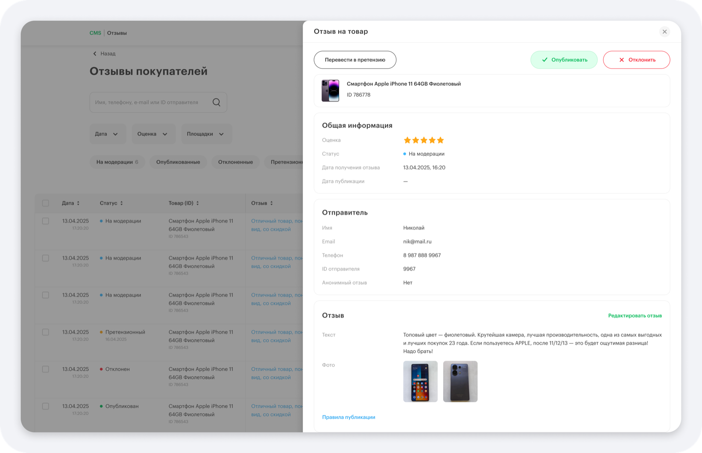
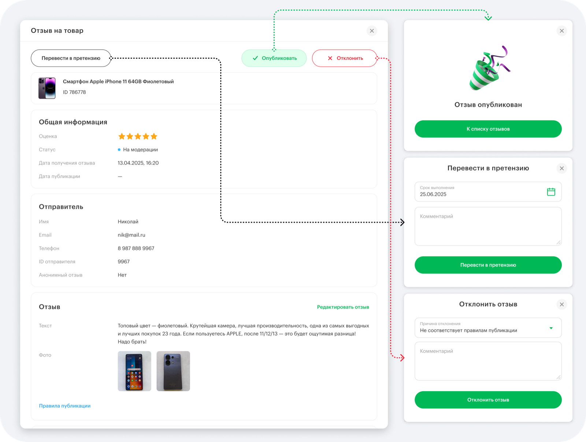
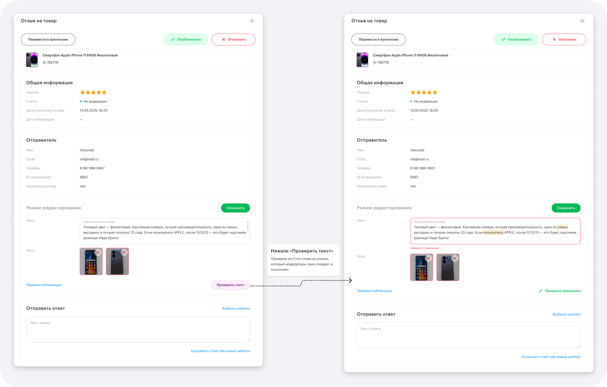
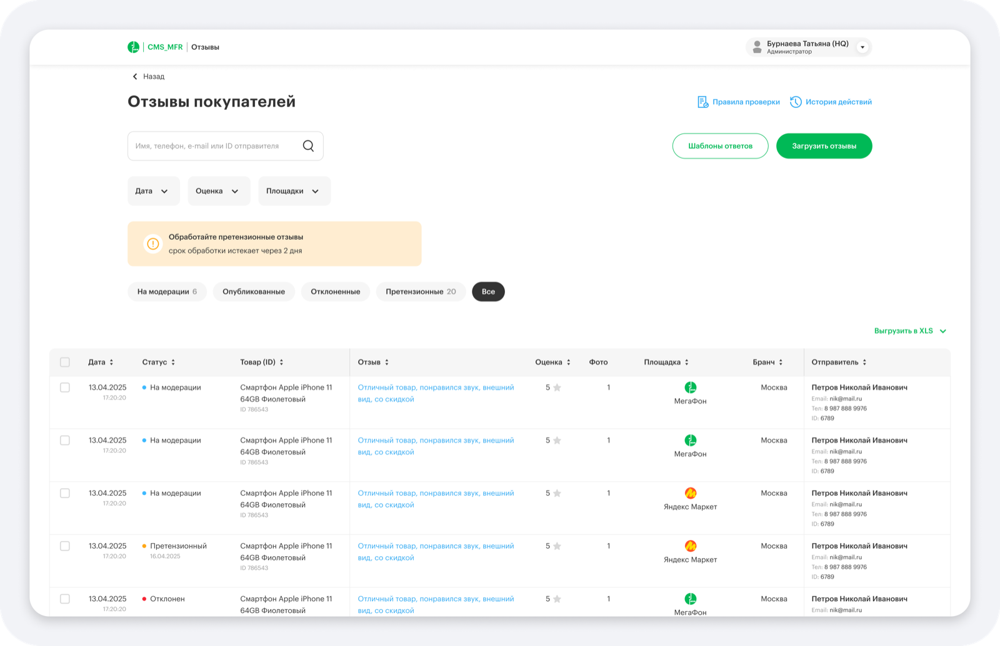
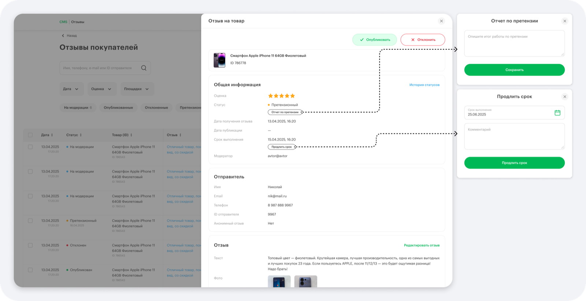
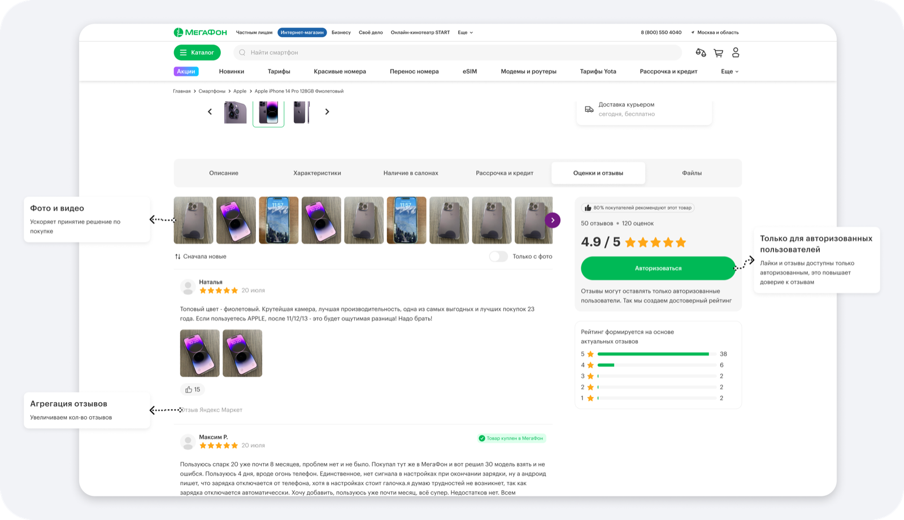

01Эргономика
ОЖИДАЕМЫЙ ЭФФЕКТ
Снижение затрат на обработку отзывов
Эргономика
для модератора.
ОЖИДАЕМЫЙ ЭФФЕКТСнижение затрат на обработку отзывов
ПРОДУКТCMS / раздел отзывов
ПОЛЬЗОВАТЕЛЬМодератор
ЗАДАЧАУпростить и ускорить модерацию
ФОКУССтатусы, фильтры, SLA
Контекст
Устаревшее ПО не отвечало текущим потребностям модератора и не поддерживало масштабирование: фото и видео, массовую модерацию, агрегацию отзывов и автоматическую проверку.
Что спроектировала
- Стартовую страницу со списком отзывов и метаданными
- Фильтры по статусу, рейтингу и дате
- Массовые действия и быструю смену статуса
- Детальную карточку с историей изменений
- Редактирование текста, фото и стоп-слова
- Претензионный сценарий с SLA два дня
- Карусель фото-видео в карточке товара
- Агрегацию отзывов с разных площадок
MODERATION / DETAIL STATES
01QUEUE
02EDIT & CHECK
03SLA / CLAIM








